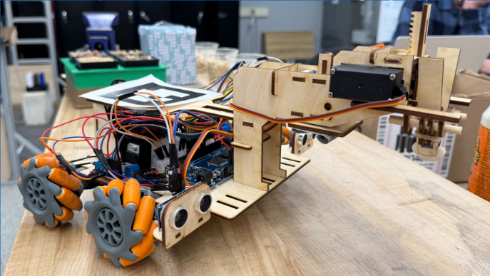
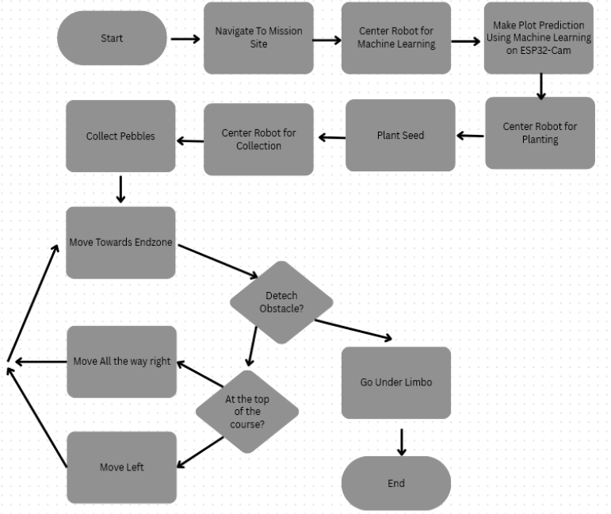
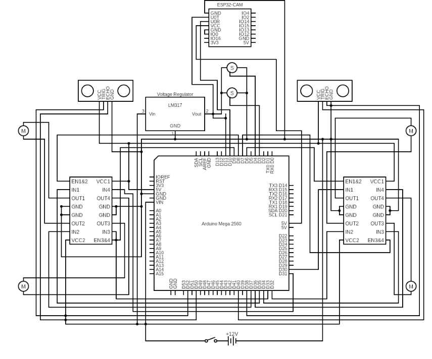
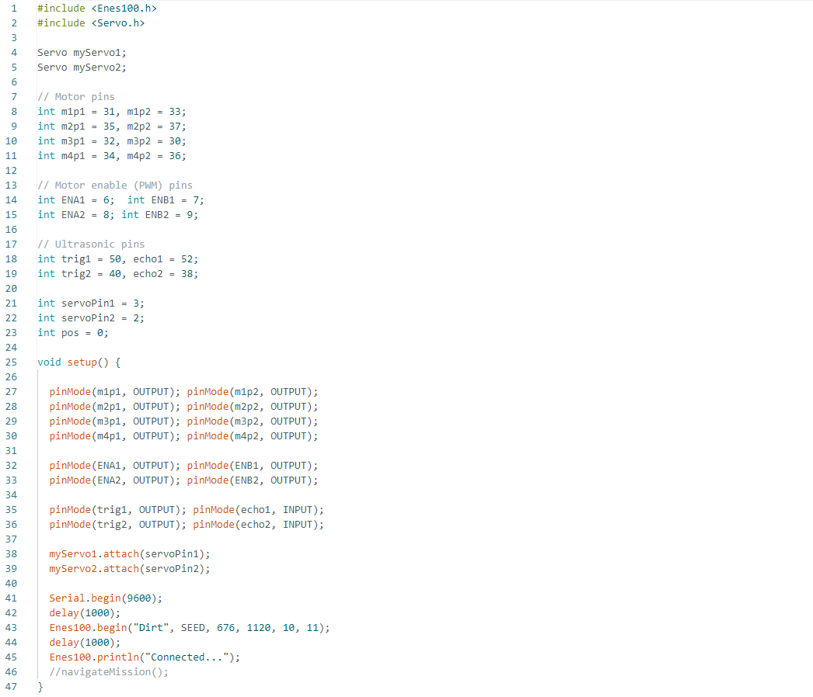
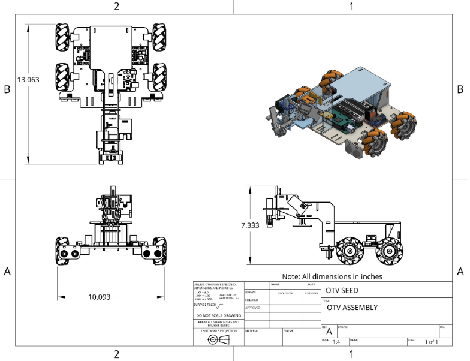
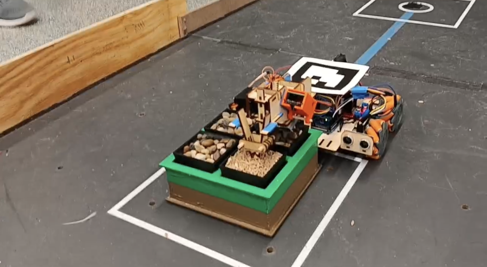

Autonomous Navigation
Use vehicle position and heading information to navigate between the landing zone, mission site, and destination while avoiding obstacles.
An autonomous over-terrain vehicle designed to navigate an unfamiliar environment, analyze soil-like substrates, plant a seed, collect a material sample, and avoid obstacles without human intervention.

Developed as part of the ENES100 Over Terrain Vehicle project at the University of Maryland, this robot was designed to complete a seed-planting mission in a randomized environment. The vehicle must navigate using position and heading information, interpret the mission site, perform physical tasks, and traverse obstacles autonomously.
Use vehicle position and heading information to navigate between the landing zone, mission site, and destination while avoiding obstacles.
Analyze the mission site's four plots and determine the substrate arrangement using the team's sensing and classification approach.
Place a seed at the required depth in a designated plot and collect a sample of non-plantable substrate.
The vehicle integrates mechanical components, embedded electronics, sensing, wireless communication, and mission mechanisms into a single autonomous system.
The microcontroller executes control logic, processes sensor information, and coordinates vehicle movement and mission actions.
Sensors and wireless communication support environmental awareness, vehicle localization, and mission-site analysis.
The chassis, drivetrain, and mission-specific mechanisms support locomotion, seed placement, and material collection.
This project was developed collaboratively by an eight-person team. My contributions focused on the following areas:

Implemented sensor-based obstacle detection and control logic using an Arduino microcontroller to support autonomous navigation.

Assisted with hardware wiring, motor driver integration, and system testing to prepare the vehicle for mission demonstrations.

Worked with a machine learning approach to predict mission-site orientations. Robot would orient itself onto the seed planter box based on the predicition given.
The project involved iterative design, prototyping, integration, and testing. This section can document how the design evolved and how engineering decisions were validated.

The hardest part of this project was getting the navigation and sensing working correctly. Our group had a touch time with accurately detecting the obstacles while also driving on un even terrain. Sometimes, the sensors would read the uneven terrain as an obstacle and try to navigate around it, getting stuck in an infinite loop of moving back and forth. The way we fixed this was by making specific laser cut wooden holders for the ultrasonic sensors. This allowed them to be stuck in place and be more consistent with their readins.
Testing evaluates whether the vehicle satisfies its navigation, communication, safety, and mission-specific requirements.

The full project report contains the detailed design process, technical implementation, supporting analysis, and testing documentation.